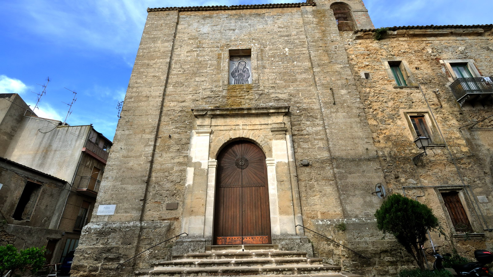

CHIESA DI SAN FRANCESCO
Il capolavoro francescano
Inglobata nell'ex complesso conventuale, presenta un'inconfondibile facciata dall'aspetto di fortezza. All'interno, l'unica navata custodisce pregiati affreschi seicenteschi e la celebre "Adorazione dei Magi", tela attribuita al pittore fiammingo Simone de Wobreck.